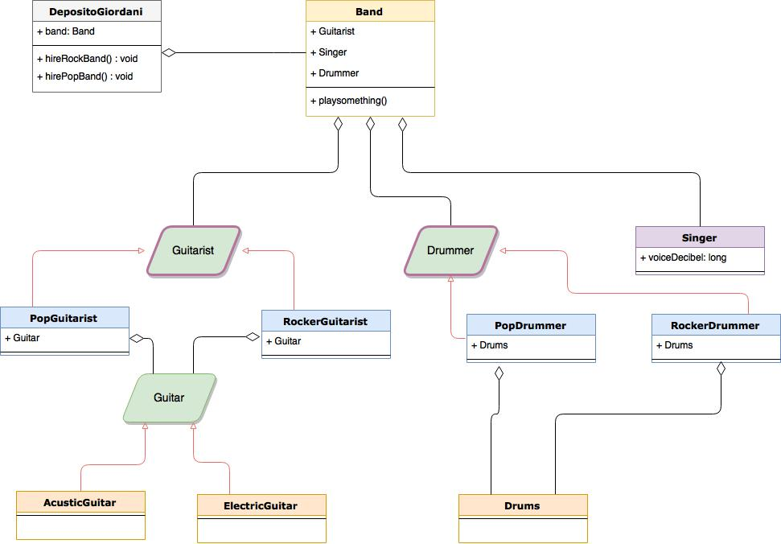

Dependency Injection
e Dagger2
Case study:
Supponiamo di sviluppare un'applicazione che gestisce eventi musicali
la prima serata sarà dedicata ad un gruppo Rock
Come fareste?

DepositoGiordani
public class DepositoGiordani {
private Band band;
public DepositoGiordani(){
this.band = new Band();
}
public void claimRockBand(){
band.playSomething();
}
}
Band
public class Band {
private RockerGuitarist guitarPlayer;
private Singer singer;
private RockerDrummer drummer;
public Band() {
this.guitarPlayer = new RockerGuitarist();
this.singer = new Singer();
this.drummer = new RockerDrummer();
singer.setVoiceDecibel(70);
}
public void playSomething(){
...
}
}
Diamo un'occhiata al Main
public class Main {
public static void main(String[] args) {
DepositoGiordani deposito = new DepositoGiordani();
depositoGiordani.hiresRockBand();
}
}
Come fareste il test?
- A causa delle dipendenze non è possibile isolare le classi
Non è testabile
- E se il prossimo concerto fosse di un gruppo Pop?
Non è riutilizzabile
come migliorare la situazione
Aumentando il livello di astrazione, e passando gli oggetti dall'esterno, adesso il DepositoGiordani può decidere se chiamare un gruppo Rock o un gruppo Pop
Band
public class Band {
private Guitarist guitarPlayer;
private Singer singer;
private Drummer drummer;
public Band(Guitarist guitarist, Singer singer, Drummer drummer) {
this.guitarPlayer = guitarist;
this.singer = singer;
this.drummer = drummer;
}
public void playSomething(boolean isRock) {
...
}
}
passaggio a parametro di interfacce
la creazione degli oggetti concreti è isolata
Main_v1
public class Main {
public static void main(String[] args) {
DepositoGiordani deposito = new DepositoGiordani();
depositoGiordani.hiresRockBand();
}
}
Main_v2
public class Main {
public static void main(String[] args) {
Singer singer = new Singer();
Drummer drummer = new PopDrummer(new Drums());
Guitarist guitarist = new PopGuitarist(new AcusticGuitar());
Band band = new Band(guitarist, singer, drummer);
DepositoGiordani giordani = new DepositoGiordani(band);
giordani.hiresPopBand();
}
}
Unit Test
public class BandTest {
@Test
public void testBandPlaySomething() throws Exception {
RockerGuitarist guitarist = Mockito.mock(RockerGuitarist.class);
RockerDrummer drummer = Mockito.mock(RockerDrummer.class);
Singer singer = Mockito.mock(Singer.class);
Band band = new Band(guitarist, singer, drummer);
when(guitarist.playGuitar()).thenReturn("and I'm Slash, ");
when(singer.singingSomething(true)).thenReturn("I'm Axl Rose ");
when(drummer.letsGetBeat()).thenReturn("now, Let's Rock!");
assertEquals("I'm Axl Rose and I'm Slash, now, Let's Rock!",
band.playSomething(true));
}
}
- Grazie al disaccoppiamento il codice è riutilizzabile
- Ed è testabile
- E' però aumentata la complessità nella creazione degli oggetti
PRO
CONTRO
Dependency Injection

Il legame tra le classi è esterno: nessun oggetto istanzia un altro oggetto, questo compito è delegato ad una terza classe di configurazione che fornisce le istanze stesse
Dagger2
crea la classe di configurazione per noi, l'importante è sapergli dire come fare, e quali oggetti vogliamo:
- @Module
- @Component
- @Inject
@Module
crea le dipendenze attraverso metodi pubblici che istanziano (@Provides) gli oggetti
- Factory Pattern: creazione degli oggetti con interfacce
- flessibilità
- dipendenza debole
@Component
Oggetto interfaccia che contiene le dipendenze, sarà lui a contattare il @Module, ottenendo i parametri di cui ha bisogno per fornire le dipendenze deboli
@Iject
Indica dove iniettare le dipendenze che Dagger ha creato
@Module
@Module
public class RockBandModule {
@Provides
public Guitarist providesGuitarist(ElectricGuitar guitar){
return new RockerGuitarist(guitar);
}
@Provides
public Drummer providesDrummer(Drums drums){
return new RockerDrummer(drums);
@Provides
public Singer providesSinger(){
return new Singer();
}
}
}
@Component e @Inject
@Component(modules = {RockBandModule.class,
RockInstrumentModule.class} )
public interface RockBandComponent {
Band injectBand();
DepositoGiordani injectDeposito();
}
public class Band{
...
@Inject
public Band(Guitarist guitarist,
Singer singer,
Drummer drummer) {
this.guitarPlayer = guitarist;
this.singer = singer;
this.drummer = drummer;
}
...
}
Main
Dagger fornisce delle classi "helper" che espongono un builder statico, il quale si occupa della costruzione delle dipendenze a CompileTime
public class Main {
public static void main(String[] args) {
RockBandComponent rockComponent =
DaggerRockBandComponent
.builder()
.build();
DepositoGiordani rock = rockComponent.injectDeposito();
weWillRockYou = rock.hiresRockBand();
....
}}
Unit Test
@Module
public class BandMockModule {
@Provides
public Guitarist providesGuitarist(Guitar guitar){
Guitarist guitarist = Mockito.mock(Guitarist.class);
when(guitarist.playGuitar()).thenReturn("I'm Jhon Frusciante ");
return guitarist;
}
@Provides
public Singer providesSinger(){
Singer singer = Mockito.mock(Singer.class);
when(singer.singingSomething(true)).thenReturn("I'm Anthony Kiedis ");
return singer;
}
@Provides
public Drummer providesDrummer(Drums drums){
Drummer drummer = Mockito.mock(Drummer.class);
when(drummer.letsGetBeat()).thenReturn("now, let's funky rock pop or whatever!");
return drummer;
}
@Module
public class InstrumentMock {
@Provides
public Guitar providesGuitar(){
return Mockito.mock(Guitar.class);
}
@Provides
public Drums providesDrums(){
return Mockito.mock(Drums.class);
}
}
@Component(modules = {BandMockModule.class, InstrumentMock.class})
public interface BandComponentTest {
Band injectBand();
}
public class RockBandTestDagger {
@Test
public void playSomething(){
BandComponentTest component =
DaggerBandComponentTest
.builder()
.build();
Band band = component.injectBand();
assertEquals("I'm Anthony Kiedis I'm John Frusciante
now, let's funky rock pop and whatever!",
band.playSomething(true));
}
}